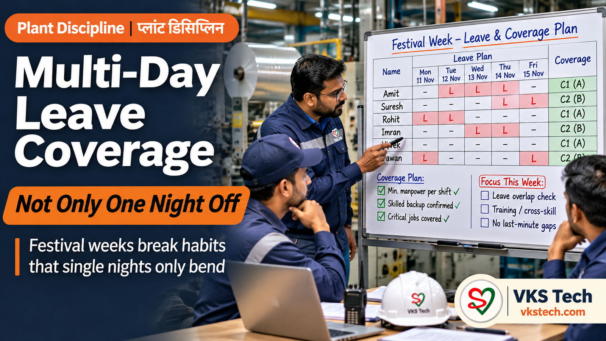
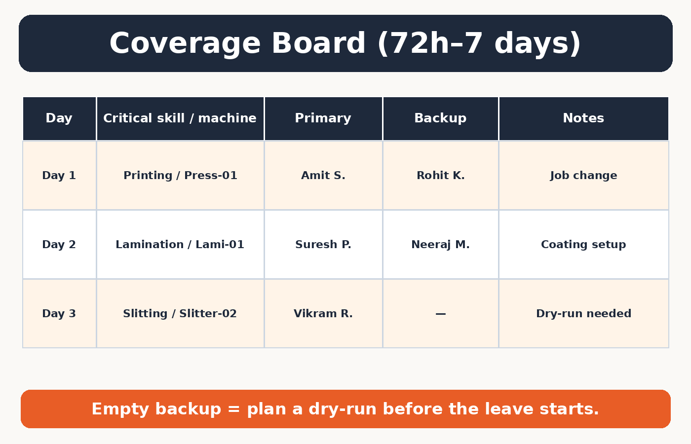
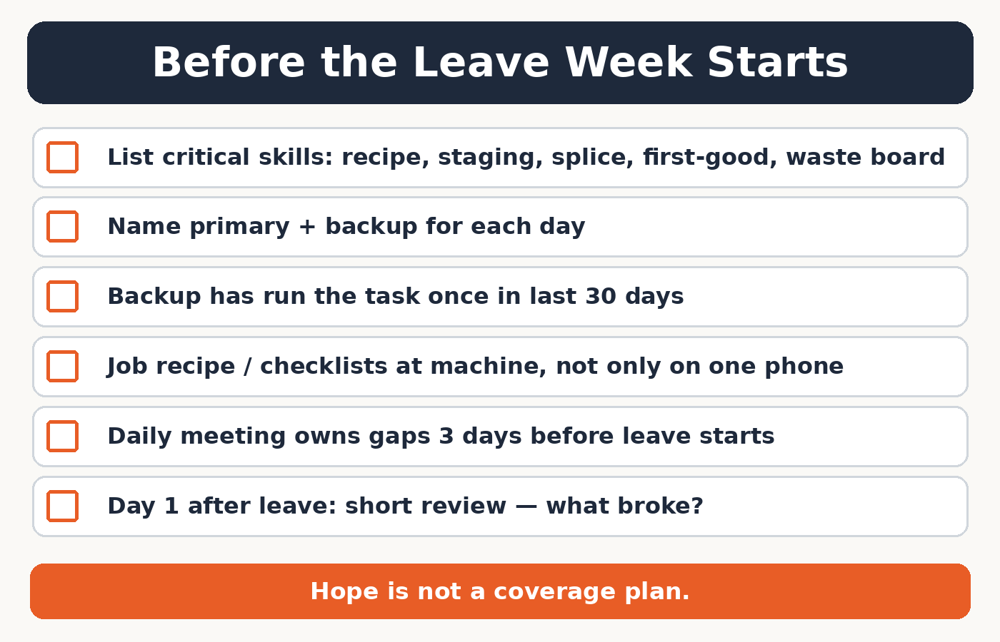
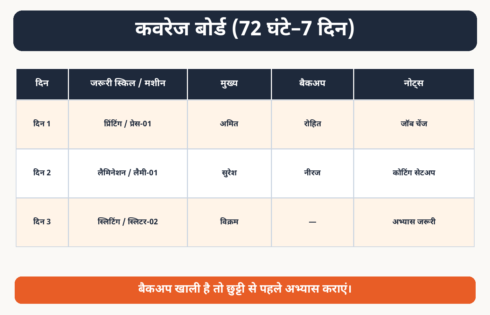
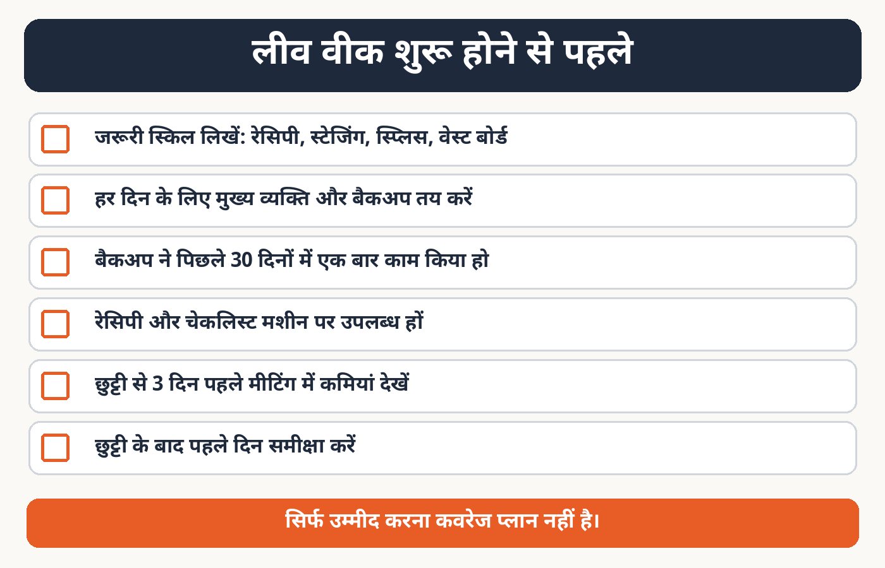

📅 Holiday / Multi-Day Leave Coverage — Not Only One Night Off
📖 8-min read | Plant Operations | Practical, numbers-first
One skilled person off for a single night is hard. A festival week or multi-day leave is different: the same gaps repeat for three to seven days, and every weak backup gets exposed.
Blog 95 focused on protecting night output when skilled operators are on leave. This post widens the window: 72 hours to 7 days, with a coverage board and a dry-run before the leave starts.
Why Multi-Day Is Harder Than One Night
- Fatigue and overtime compound
- The “backup” may never have run the task unsupervised
- Job mix still changes; recipes and staging still matter
- Problems discovered on day 1 repeat on day 2 if nobody owns the fix
Single-night cover can be a phone call. Multi-day cover needs names on a board before the first day off.
Coverage Board (72h–7 Days)

Minimum columns:
- Day
- Critical skill / machine (change to first-good, staging, splice, waste board, incoming gate)
- Primary
- Backup
- Notes (dry-run done? recipe at machine?)
Empty backup = schedule a practice run (Blog 111) before the leave week, or accept known risk in the daily meeting.
Before the Leave Week Starts

- List critical skills tied to your discipline habits (recipe, staging, splice, first-good, waste board).
- Name primary + backup for each day on the constraint line.
- Confirm backup has run the task once in the last 30 days — or plan that run now.
- Put job recipes and checklists at the machine, not only on one person’s phone.
- Daily meeting owns gaps starting 3 days before leave — not the morning of.
- Day after leave ends: 10-minute review — what broke, what to cross-train next.
Link to Cross-Training and Night Leave
111 Cross-training slots — how backups become real before the holiday.
95 Night leave — still valid for single nights; multi-day needs the board.
104–108 — recipes, staging, stops, waste board only work if someone present can run them.
Key Takeaway
📅 हॉलिडे / मल्टी-डे लीव कवरेज — केवल एक रात की छुट्टी नहीं
📖 9-min read | प्लांट ऑपरेशन्स
एक रात कौशल्य व्यक्ति का ऑफ होना कठिन है। त्योहारी सप्ताह या कई दिनों की छुट्टी अलग है — वही गैप तीन से सात दिन दोहराता है।

